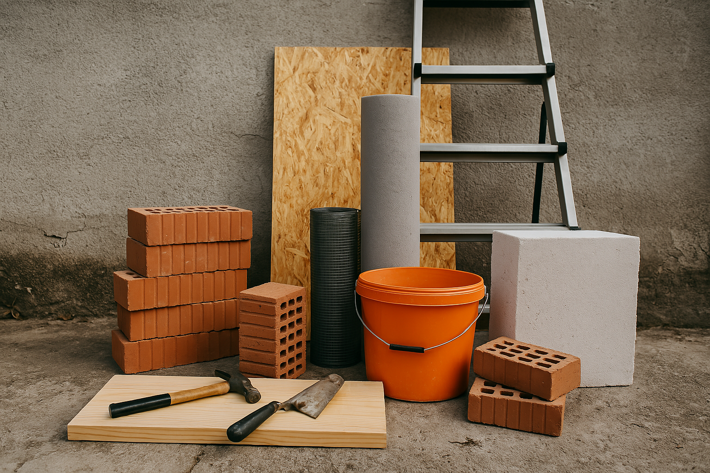

Jätkusuutlik renoveerimine: Mis see on?
12. mai 2025
Jätkusuutlik renoveerimine ei tähenda ainult uusi aknaid või energiasäästlikke seadmeid – see on mõtteviis, mis arvestab looduse, inimeste ja tuleviku vajadustega.
Loe edasi →

Kuidas leida soodsalt ehitusmaterjale?
12. mai 2025
Ehitusmaterjalid ei pea olema kallid – avasta nipid ja kohad, kust neid leida taskukohaselt või isegi tasuta.
Loe edasi →

Taaskasutatud materjalid: Uus elu vanadele asjadele
12. mai 2025
Taaskasutatud materjalid aitavad säästa loodust ja rahakotti. Vaata, milliseid materjale saab renoveerimisel edukalt uuesti kasutada.
Loe edasi →
Loodussõbralike viimistlusmaterjalide valik
12. mai 2025
Värvid ja viimistlusmaterjalid võivad sisaldada kahjulikke kemikaale. Õpi tundma keskkonnasõbralikke ja tervisesõbralikke alternatiive.
Loe edasi →
Päikeseenergia koduses renoveerimises
12. mai 2025
Päikesepaneelide kasutamine on muutumas taskukohasemaks. Uuri, kuidas neid nutikalt kodu renoveerimisel rakendada.
Loe edasi →